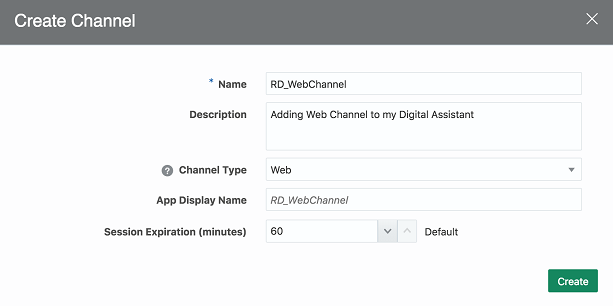

Expose Your Digital Assistant through
a Web Channel
Before You Begin
This 15-minute tutorial shows you how to make a digital assistant available to users through a web page.
Background
You’re part of a project team that just completed a digital assistant (DA). You now want to expose it though multiple channels, including your corporate web site.
In this tutorial, you'll configure and publish your DA through a web channel, download and install the sample client application, and run and test it against your DA. Since this allows users to access your DA through a web page, it’s within easy reach of a multitude of users.
You'll use npm, which is distributed with Node.js, to configure, install and host your web channel from your local machine.
To check if you already have Node.js installed, run this command in your terminal:
node -v
To check if npm is installed, run this command:
npm -v
The ODA Client samples for JavaScript.
To get them, navigate to http://bit.ly/amcedownloads, accept the Oracle Technology Network license agreement, scroll down to the ODA Client SDKs section, and then download bots-client-sdk-js-samples-<Version_Number>.zip.
Configure a New Web Channel for Your DA
With the Oracle Digital Assistant UI open in your browser, click to open the side menu.
Click Development and select Channels.
On the Users tab, click + Channel.
In the Create Channel dialog, fill in the Name, Description, and App Display Name fields.
From the Channel Type dropdown, select Web.
The completed dialog might look something like this:

Click Create.
Once created, you are returned to the page for the channel. At this point you need to route this channel to the digital assistant you created.
Open the Route To dropdown menu, enter your DA name in the Filter box, and select your DA.
Switch Channel Enabled to ON.
Copy the the value of the App Id field to a text file.
You will use it later on in this tutorial while running the sample client application.
Set Up the Web Channel on Your Local Machine
For purposes of this tutorial, we'll set up using your machine's localhost instead of using a public-facing web server.
Find the bots-client-sdk-js-samples-<Version_Number>.zip file that you downloaded at the beginning of this tutorial and extract its contents.
Open a terminal window or command prompt and navigate to the chat-sample-web directory of the contents of the extracted zip.
Run the following command:
npm install
Start the sample ChatSample app by running the following command:
node server.js
After running this command, you should see a message indicating that the server is listening on port 3000.
Test the DA on the Web Channel
The web channel setup is ready, so let’s move on to testing your DA in the web channel.
 Expose Your Digital Assistant through
a Web Channel
Expose Your Digital Assistant through
a Web Channel Before You Begin
Before You Begin Configure a New Web Channel for Your DA
Configure a New Web Channel for Your DA to open the side menu.
to open the side menu.

 Set Up the Web Channel on Your Local Machine
Set Up the Web Channel on Your Local Machine
 Test the DA on the Web Channel
Test the DA on the Web Channel